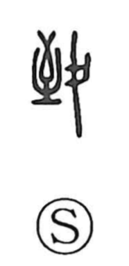

Explanation
This character is a compound built from 至 and 攴 (攵), though in bronze inscriptions it appears as 至 combined with 人. The graph 至 depicts the point where an arrow comes to rest, the place it has reached. With a person added, the figure expresses someone arriving at that point, giving 致 the sense of “to reach, arrive” and, by extension, “to develop into a certain state.” Bronze texts already use it as a verb meaning “to do, to bring about,” and in later usage its functions differentiated alongside 到. In compounds such as 送致 it conveys “to send, deliver” and “to carry out,” while in expressions like 極致, 雅致, and 風致 it points to what is brought to its highest refinement—a cultivated excellence or tasteful quality attained by thorough mastery.